Forma aktywna
Prolog – Subtelny alfabet materii
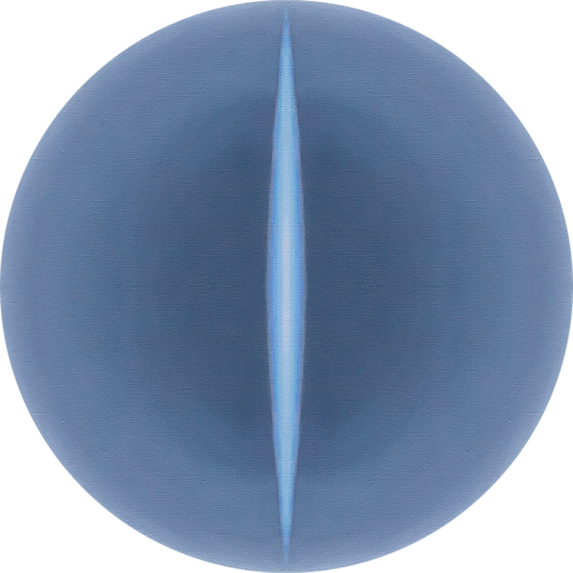
Inicjum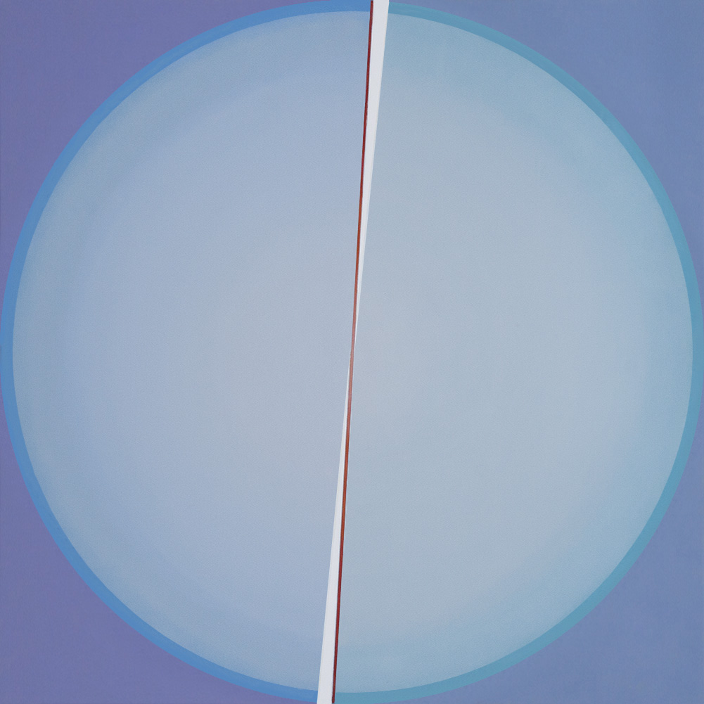
Rozdzielność Logos
Logos
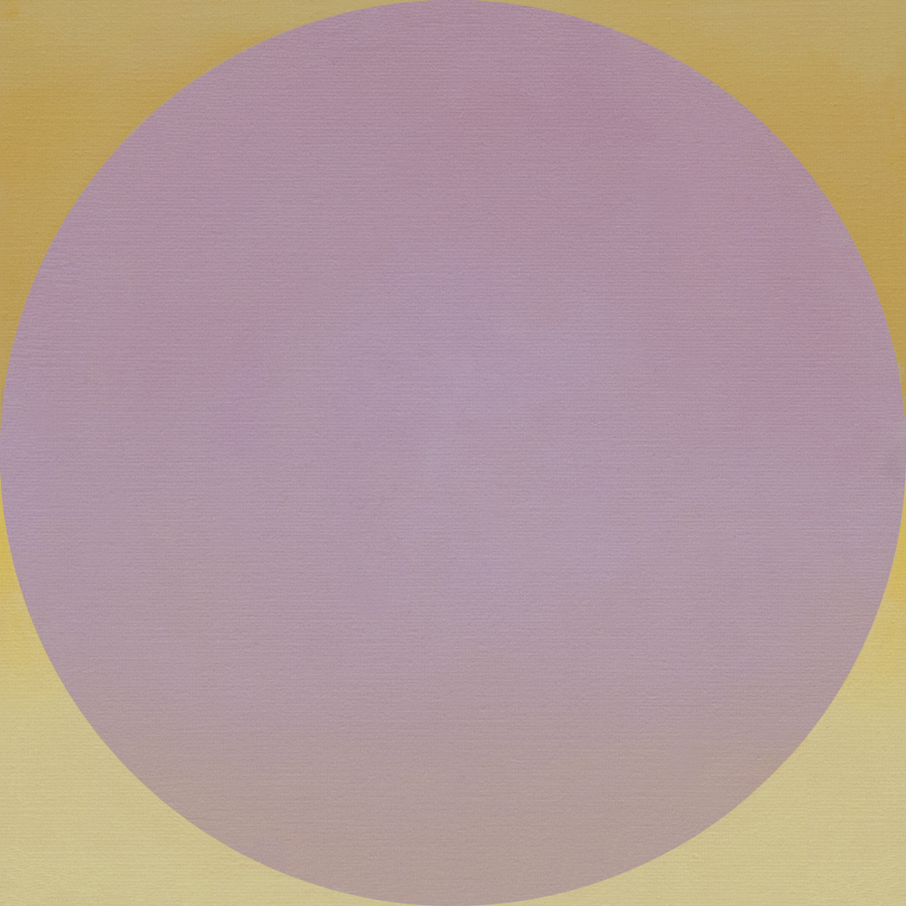
Precyzja Metanoja
Metanoja
Projekt „Forma aktywna” zrealizowany w ramach programu stypendialnego Ministra Kultury i Dziedzictwa Narodowego „Kultura w sieci” odpowiada na społeczne zapotrzebowanie
porządkowania
emocji przy pomocy sztuki.
Dzieło sztuki reprezentuje obraz, jako wizualny PROZAC. Kolor w obrazie
przekracza granice materii, posiada
właściwości stymulacji układu nerwowego widza.
Chromoterapia (koloroterapia) stosowana już w starożytności, w obecnej sytuacji społecznej
kwarantanny może zaistnieć jako środek służący wzmacnianiu kondycji współczesnego człowieka.
Sztuka w sieci, kiedyś z wyboru teraz staje się koniecznym kanonem obrazu kameralnego, a przez to osobliwego.
Projekcja cyklu obrazów w zamyśle konceptualnym, nasyconych barwą, światłem i walorem połączona z opisem dopełniającym oddziaływanie dzieła jest propozycją komplementarną.
Pandemia nie może zabrać marzeń i potrzeby piękna, które każdy nosi w sobie. Odczuwamy potrzebę
współdzielenia myśli, uczuć i doznań.
Żeby temu sprostać, sztuka musi pokonać narzucone sytuacją ograniczenia i dystans społeczny.
W tym ograniczeniu wyzwala się inna przestrzeń twórcza i inne sposoby docierania do odbiorców.
Sztuka potrzebuje mediów, aby pełnić swą rolę.
Proponowane są inne formy przekazu na pozór znane a jednak podjęte w innym kontekście.
To zmienia percepcję odbioru dzieła. Rzeczywista przestrzeń galerii, zamienia się w płaski monitor.
Środki komunikacji graficznej na nowo realizują funkcję kontaktu twórcy i odbiorcy dzieła.
Malowane przeze mnie obrazy, wykonane w technice olejnej na płótnie o wymiarach 120x120 cm,
nie mają charakteru dekoracji, a raczej pełnią funkcję terapeutyczną.
Wizualny PROZAC, niezbędny środek w okresie trwania izolacji.
Obcowanie z obrazem, rozwija uważność i pogłębia koncentrację. Ożywienie izolacyjnej stagnacji,
wyjście poza rutynowe schematy, urozmaicenie sposobu postrzegania obrazu,
złagodzenie skutków słabnącej cierpliwości, obniżenie napięcia nerwowego. Taka projekcja obrazów
posiada
walory angażowania, wciągania widza w przestrzeń koloru. Daje uczucie harmonii wewnętrznej. Poprzez to, że do realizacji malarskiej wprowadzam animację, forma aktywna w swoim procesie stawania się, jest interaktywna i dokonana.
PROLOG
SUBTELNY ALFABET MATERII
Prologomena
Prolog rozgrywa się w przestrzeni barwnej geometrii, między pionem a poziomem. Poruszamy się w zastanych kanonach, znanych, rozpoznawalnych, wydaje się, że ciasnych, na pozór wyczerpanych. Jednak można je czytać na nowo, od nowa je wypełniać, indywidualnie, subiektywnie. Przez to stają się zupełnie inne, niewyczerpywalne. Sięganie po klasyczne kanony jest wyzwaniem, pewną ramą, podporą, w której swobodnie wystarcza przestrzeni na wolność. Rama i kanon mogą stanowić większe wyzwanie niż nieograniczona ekspresja zewnętrzna. To poprzeczka dyscypliny wewnętrznej, równie obszernej jak zewnętrzność. Przestrzeń buduje się w głąb. Koło i kwadrat, najprostsze figury sztuk wizualnych są dla mnie punktem wyjścia, opowieścią o zjawiskach, bycie, zależnościach, relacjach. Wpisuję w nie swoje rozważania na temat wzajemności koloru, rzeczy i zjawisk. Moje formy zewnętrzne Engramy są znakami form wewnętrznych.
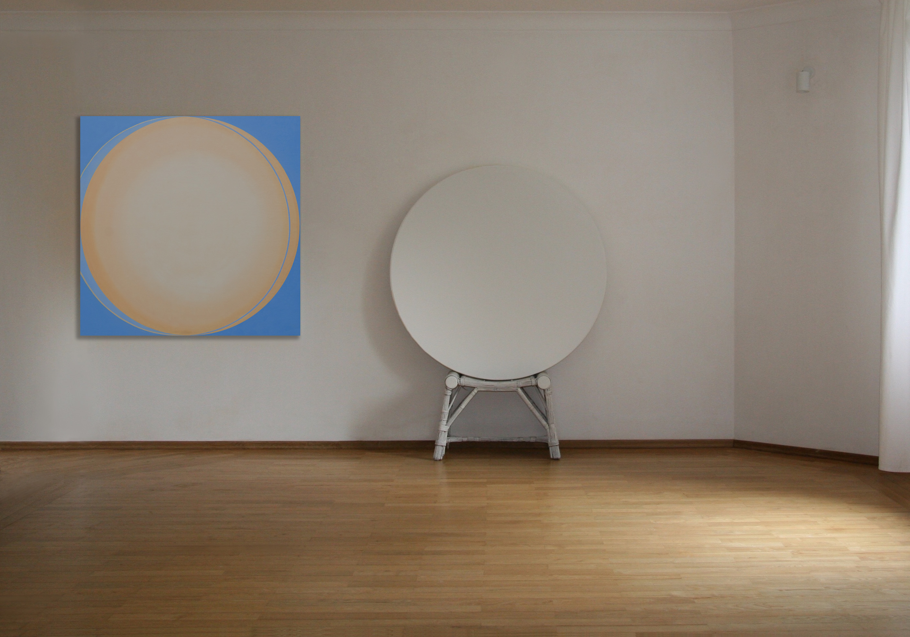
Fragment pracowni„...Czysta matematyka, a w szczególności czysta geometria, może tylko pod tym warunkiem posiadać realność przedmiotową, że dotyczy jedynie przedmiotów zmysłów, co do których jednak jest niewzruszoną zasadą, że nasze zmysłowe przedstawienie nie jest wcale przedstawieniem rzeczy samych w sobie, lecz tylko sposobu, w jaki nam się one przejawiają. Stąd wynika, że twierdzenia geometrii nie są, jak by kto może przypuszczał, określeniami samego tylko tworu naszej poetyckiej fantazji i że nie mogłyby więc być z całą pewnością odniesione do przedmiotów rzeczywistych, lecz że są z koniecznością ważne dla przestrzeni, a przeto też i dla wszystkiego, co się może w przestrzeni trafić; przestrzeń bowiem nie jest niczym innym, jak formą wszystkich zjawisk zewnętrznych, w której jedynie mogą nam być dane przedmioty zmysłów. Zmysłowość, której formę geometria przyjmuje za podstawę, jest tym, na czym polega możliwość zjawisk zewnętrznych; nie mogą więc one nigdy zawierać niczego innego niż to, co geometria im przepisuje...” Immanuel KANT
Malarstwo dyscyplinuje, obraz skupia, nie rozprasza, wycisza. Kolor podąża za zmianą emocji. Radość koloru budzi optymizm. Walor w barwie nie musi być mocny aby poruszał. Im jest bardziej delikatny, angażuje i dotyka wszystkich wrażliwych zmysłów, uruchamia wyższe rejestry bodźców. Łagodność środków wyrazu, miękka tonalność są już subtelnym ruchem, drganiem cząsteczek struktury, obrazują ulotność. Gęstość pigmentu i materia farby budują przestrzeń i głębię. Pastel ma siłę oddziaływania. Daje poczucie bezpieczeństwa.
Szukam koloru - Szukam formy
Człowiek stworzony jest do pragnień. Pragnienia podążają aż w nieskończoność. Chciałoby się jak najwięcej, jak najlepiej, jak najbardziej. Jest pragnienie aby dostrzec barwę na granicy widzialności, nazwać ją. Pojawia się przeczucie, że istnieją kolory, których nie widać. Widoczne jest natomiast zjawisko, które zachodzi między barwami - walentność koloru, dopełnienie, poistnienie. Forma malarstwa posiada tę właściwość stworzenia swego rodzaju alfabetu, który zawiera wiadomości trudno wyrażalne. To spowolnienie prędkości światła - kontemplowanie.
Forma aktywna
Pojęciem forma aktywna nazywam formę dzieła połączoną z aktywnością artystyczną,
postrzeganiem,
rozumieniem, odczuwaniem.
To poznanie intelektualne dotyczy twórcy i odbiorcy sztuki. Prymat dzieła jest zawarty w aktywności.
Doświadczenie artysty i widza - adresata, uczestnika dzieła współtworzy formę aktywną.
Dopiero wtedy forma jest dokonywana.
Człowiek, może tworzyć i odbierać sztukę, ponieważ może oderwać się od materii, jednak to materia
pozwala zmagać się z formą i samym sobą. Proces tworzenia jest dla mnie najistotniejszy.
Najpierw powstały obrazy rzeczywiste, malowane na płótnie techniką olejną a następnie obrazy
graficzne - animacje. Kolejność nie jest przypadkowa.
Odwrócenie tej sytuacji spowodowałoby pominięcie roli twórcy doświadczającego procesu dojrzewania
formy
fizycznej.
Materialność jest formą szczególnie pożądaną i jak nigdy dotąd stanowi wartość wyjątkową.
Malarstwo materii, któremu przepowiadano schyłek, okazuje się mieć nade wszystko potrzebne cechy,
które nie jest w stanie zastąpić inne medium wizualne.
Materia powoduje, że odczuwamy więcej, doświadczamy lotnych wrażeń komunikacji.
Okazuje się iż sztuki wizualne oglądane na ekranie nie zaspakajają potrzeby człowieka, preferującego
kontakt ze strukturą, teksturą i przestrzenią.
To oczywiście truizm, który przed pandemią nie był tak bolesny.
Animacja engramów
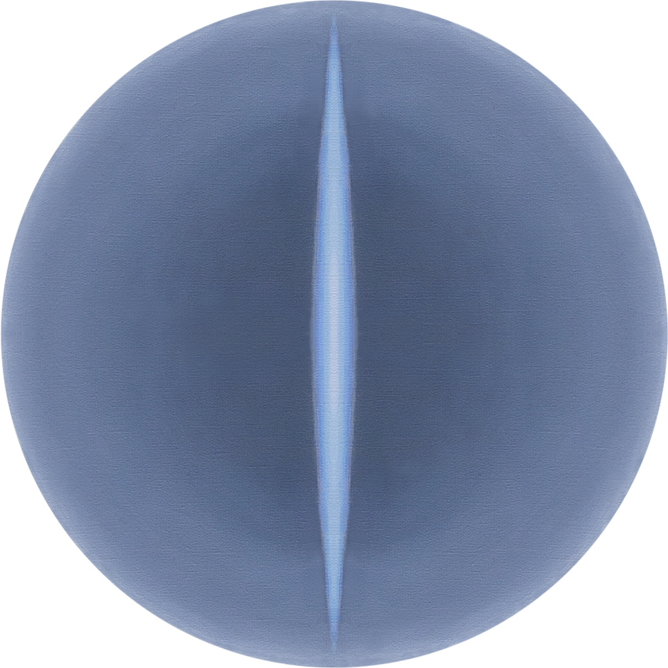
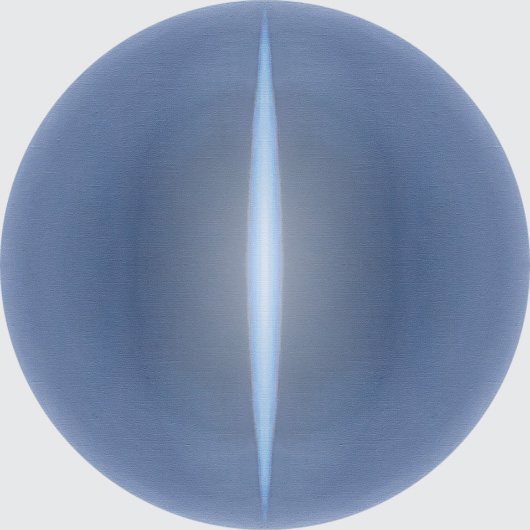
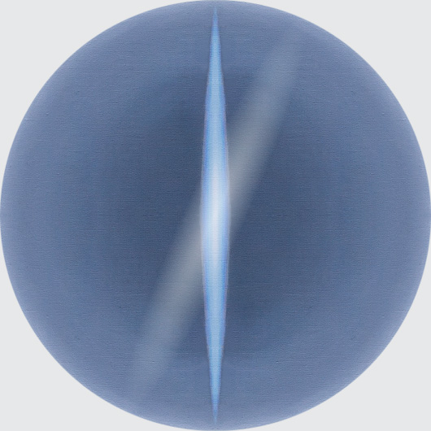
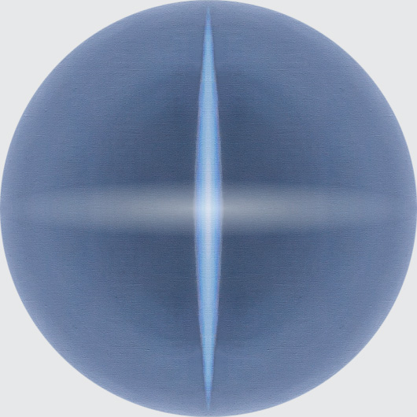
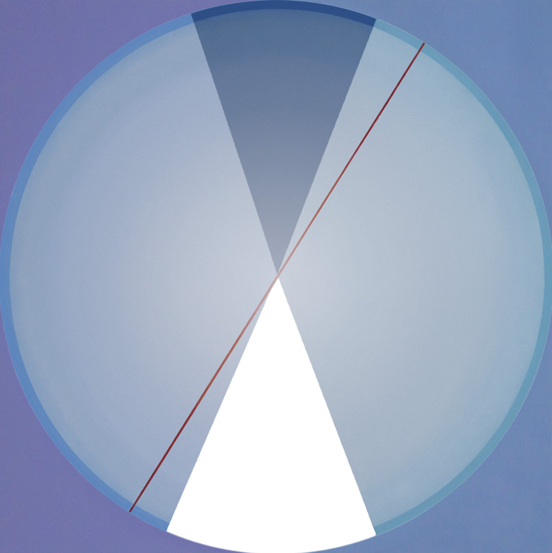
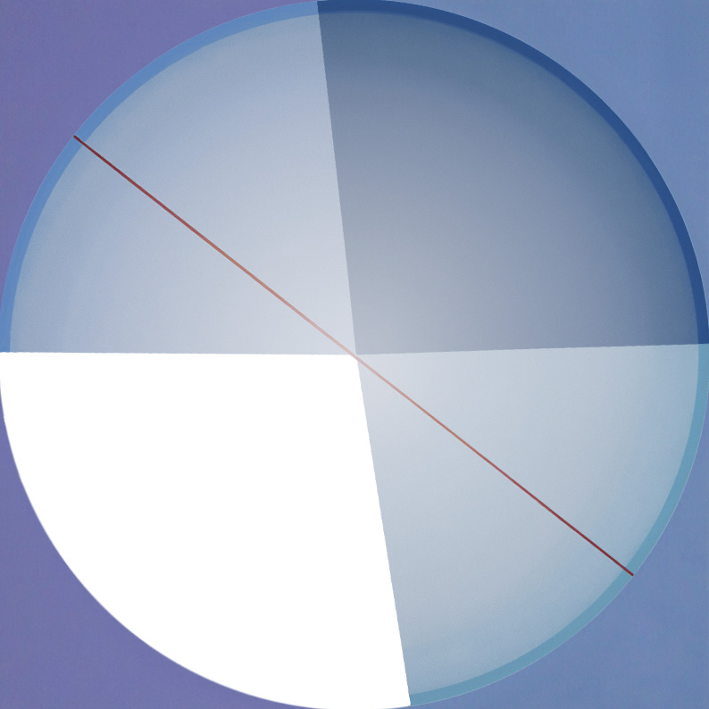
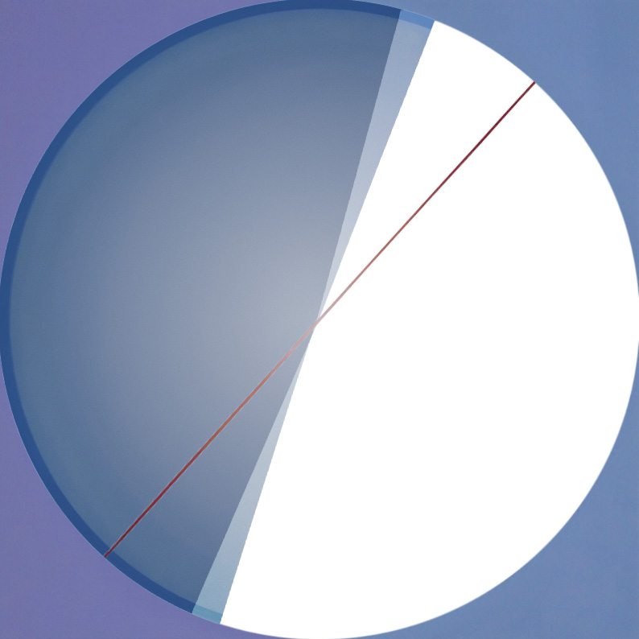
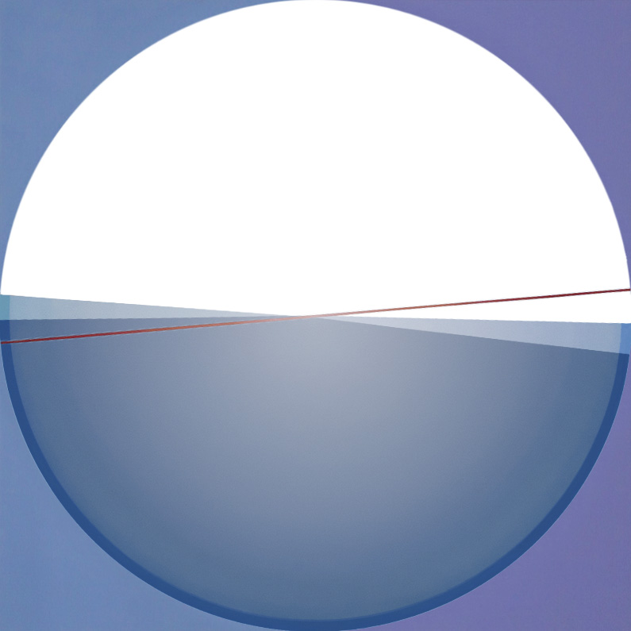
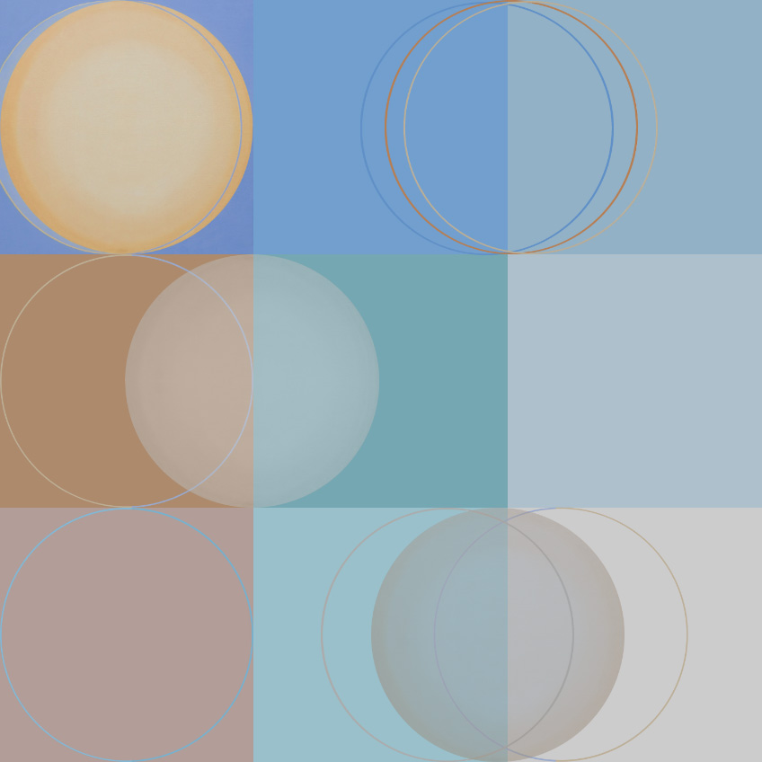
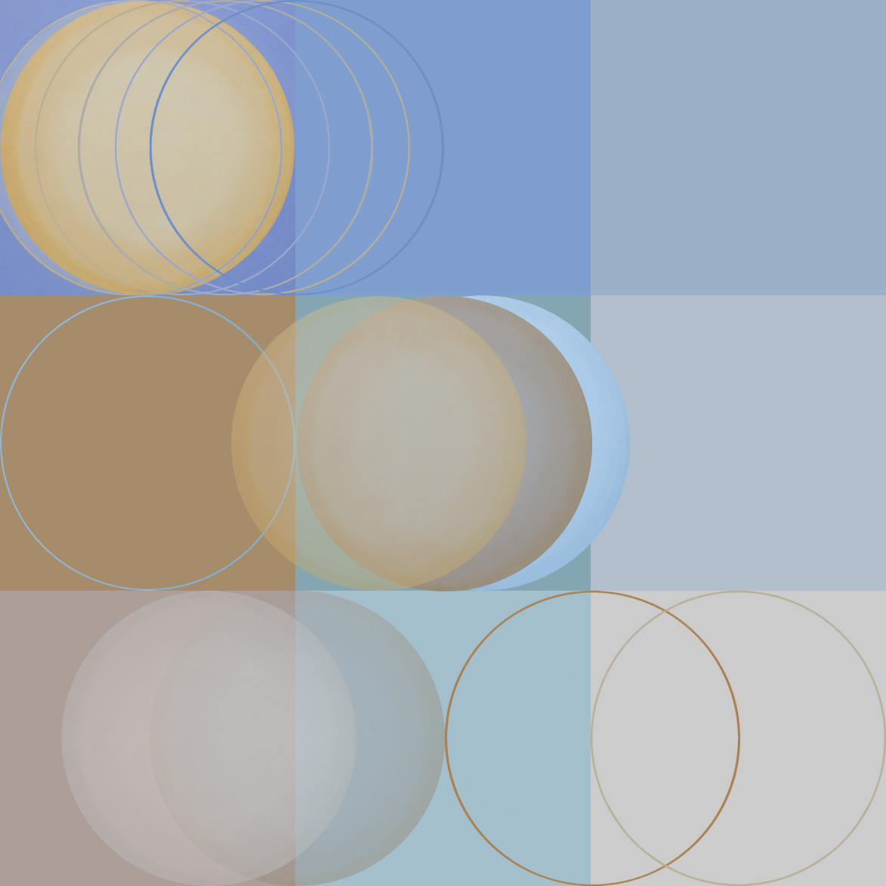
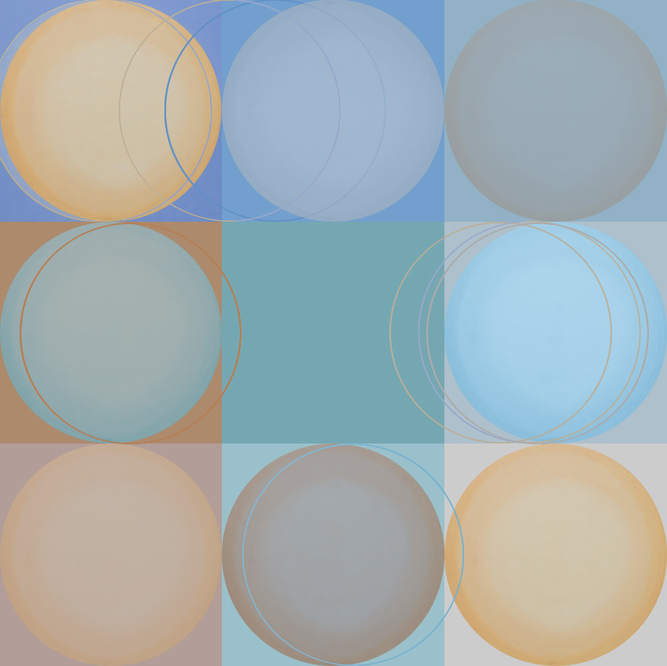
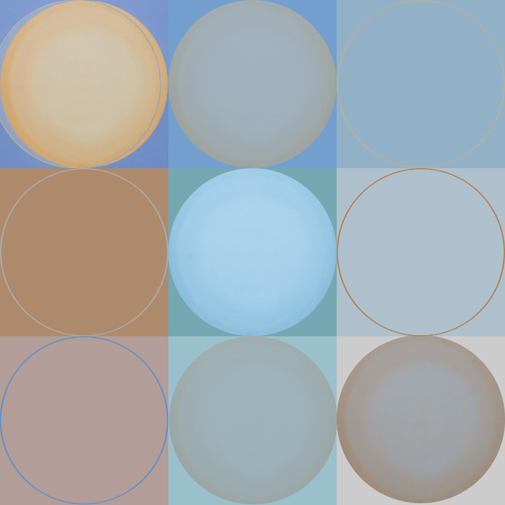
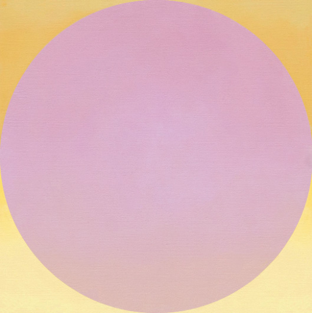
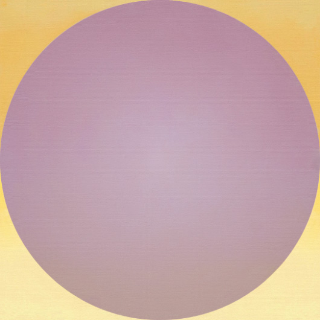
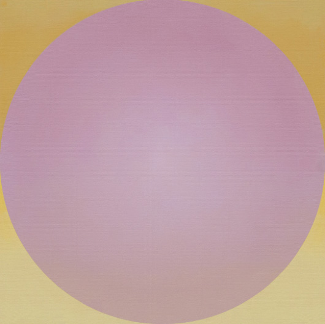
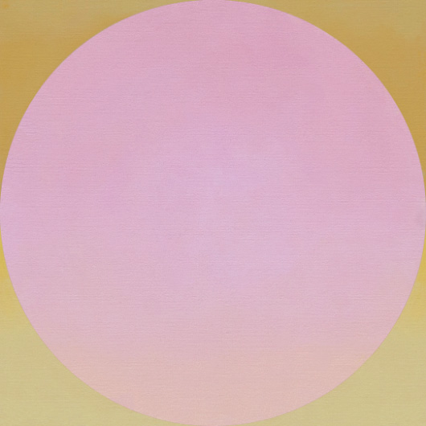